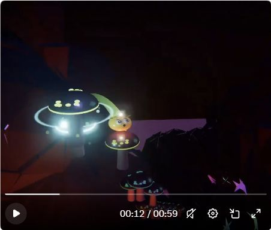
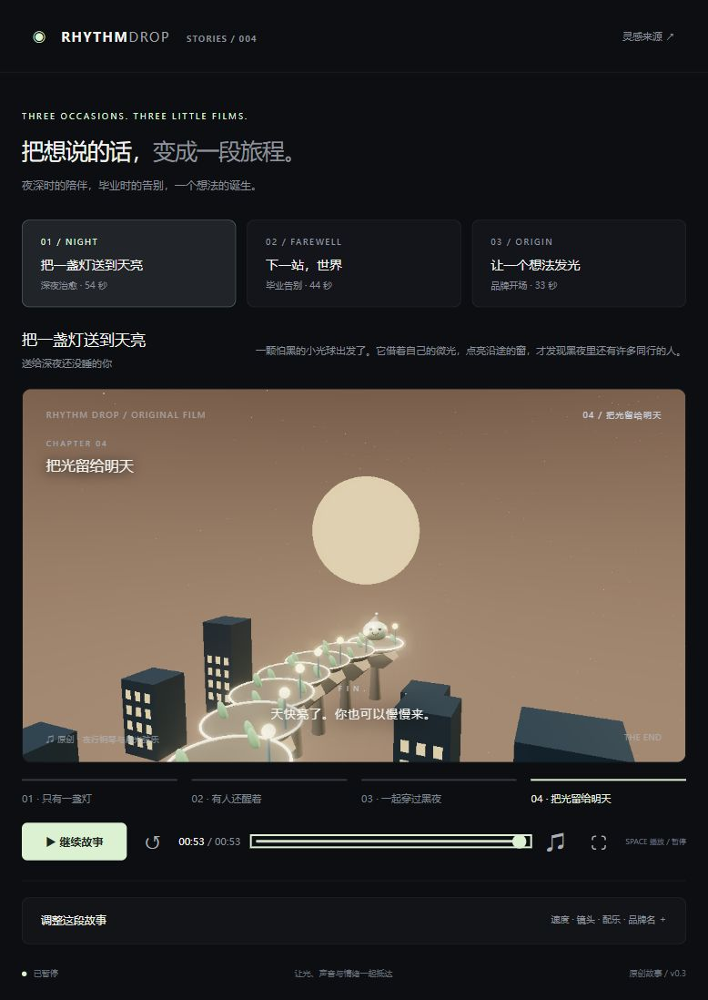
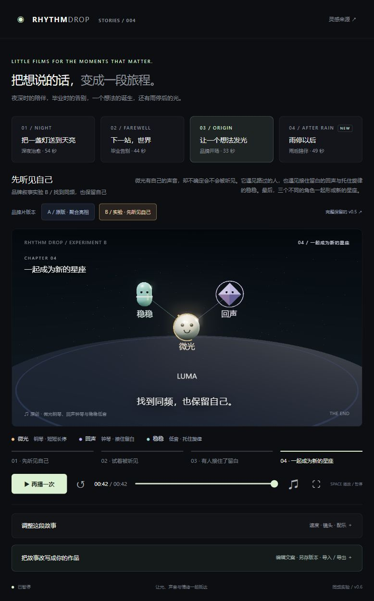
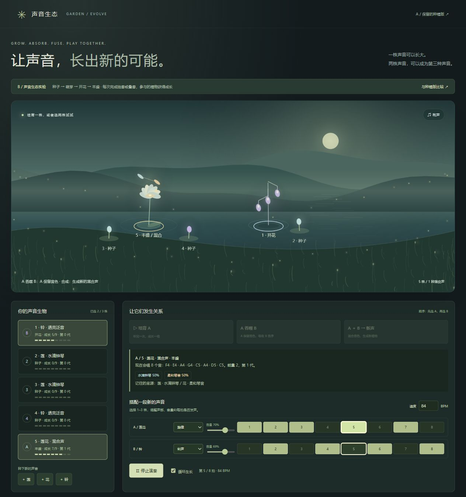
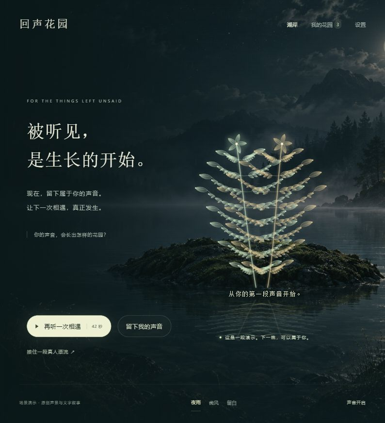

先让声音成立
动机、音色、密度、强弱、留白与收束，构成情绪发展。动作与镜头接住具体的声音事件；只在节拍上闪光，容易变成机械的效果展示。
RHYTHM DROP / SOUND FIRST
初始目标是研究音乐型声音：音乐怎样让动作、空间与光产生节奏，进而成为一段有情绪、有场合的视听体验。
来源是 Gorden Sun 在 X 展示的音乐动画效果。我们从弹跳与落点同步出发，依次尝试故事、角色、声音创造，以及真实声音与人的相遇。
研究已归档 · v0.1–v0.11 · 产品价值尚未验证
01 / WHAT WE LEARNED
这轮讨论留下的创作原则与待验证判断。
动机、音色、密度、强弱、留白与收束，构成情绪发展。动作与镜头接住具体的声音事件；只在节拍上闪光，容易变成机械的效果展示。
先确定送给谁、何时播放、希望留下什么感受。陪伴、毕业、发布、欢迎新人，需要不同的乐句、角色目标和结尾。
球形本身没有固定性格。稳定的声音动机、外形细节、动作习惯，以及如何回应别人，才能让角色被记住。“同频”是关系中的回应。
种下一株植物只是开始。成长改变乐句，吞噬吸收音序，合成混合音色，多声部搭配创造新声音，才可能形成持续创作的理由。
将声音与作者、背景、意图关联，允许被听见、被回应，并留下共同记忆。漂流瓶式社区是价值假设，需要真实参与者与持续反馈来验证。
多轮反馈仍认为缺少故事感、效果差。录音、漂流、回应的闭环已在本机实现，但音乐感染力、人物可信度与再次使用的动机尚未成立。
02 / EXPERIMENTS, PRESERVED
以下为研究原型。声音需要点击播放后开启；建议使用耳机。




42 秒原创音乐与文字故事，配合月夜湖岸、音频驱动的植物与涟漪。网页可听声景演示；真实录音、漂流、回应与双向交流保留在本机服务中。
演示使用原创音乐和文字，无真人配音；公开页未开放真人社区。03 / WHAT REMAINS OPEN
本轮的结果是一组可运行实验和研究记录。更好的配乐、表演与故事，需要在一个具体场合里打磨，并用真实听众的完整观看、记忆与再次使用来判断。
社区方向则需要验证：人是否愿意留下真实声音，是否能得到有意义的回应，是否愿意回来。当前没有这些证据，不能把功能闭环写成产品价值已经成立。
04 / RESEARCH ARCHIVE
v0.10 页面与源码也完整保留，需使用本机社区服务运行。较早版本保留说明、机制与截图；没有声称每个版本都具备独立运行快照。